Meet the TAs
We are very excited to teach you this fall! Please email cs61a@berkeley.edu if you have any logistical questions or concerns. Otherwise feel free to email any of the staff members below.
Teaching Assistants
Teaching Assistants (TAs), also known as Graduate/Undergraduate Student Instructors (GSIs), teach 30 - 40 students in lab and discussion sections every week.
Aaron Chen
- aaron_chen@berkeley.edu
- Lab 132C Tu 2-3:30 PM (Soda 277)
- Disc 133B Th 3:30-5 PM (Wheeler 200)
- Hi, I'm a third year CS major. Aside from teaching, I'm into competitive melee, cello, and various video games. Feel free to reach out for anything 61a or otherwise!
Abhinav Ashar
- abhinav_ashar@berkeley.edu
- Lab 104C We 12:30-2 PM (Soda 277)
- Disc 122B Th 12:30-2 PM (Hearst Mining 310)
- Hey everyone! My name is Abhinav and I'm a third-year EECS + Business student from Houston. I'm a huge basketball fan (KD’s #1 fan), love playing the clarinet, and know where to get the best mango lassi in Berkeley. If you ever see me on campus, feel free to say hi!
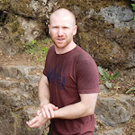
Adam Loeffler
- aross.1311@berkeley.edu
- Lab 153C We 11-12:30 PM (Soda 271)
- Disc 153B Fr 11-12:30 PM (Soda 310)
- Hey everyone! I love this class and really hope you come to like it as much as I do. When I'm not teaching, I'm probably hanging out with the family or rock climbing.
Albert Xu
- albertxu3@berkeley.edu
- Lab 143C Tu 6:30-8 PM (Soda 275)
- Disc 144B Th 6:30-8 PM (Wheeler 120)
- If you are jumping up and down in muddy puddles, you must wear your boots!
Alex Kassil
- alexkassil@berkeley.edu
- Lab 119C Tu 9:30-11 AM (Soda 275)
- Disc 120B Th 9:30-11 AM (Dwinelle 182)
- EMAIL ME IF YOU WANNA CHAT! I love talking about all things related to CS and Berkeley and life and academics and finding internships and whatever! I wanna answer your questions. A bit about me - I am third year CS/Math major who loves teaching. Also my sections will occasionally have snacks.
Alex Stennet
- alexstennet@berkeley.edu
- Asphalt, the most recycled material in the world (99% recycled, ~62mil tons/yr), is a liquid with a viscosity 230 billion times water's, it can be melted out of roads. This was measured via the pitch drop experiment, which started in 1927 (it's actually live streamed). My pronouns are he/him.
Alex Yu
- sxyu@berkeley.edu
- Lab [NPE] 141C Tu 6:30-8 PM (Soda 271)
- Disc [NPE] 142B Th 6:30-8 PM (Wheeler 200)
- Hello! I am a 3rd year CS and Applied Math double major from Vancouver, Canada. I enjoy problems solving, coffee, and dark chocolate. I am interested in VR/AR and am also a member of UGTCS, the CS theory club.
Aman Shah
- amanshah2711@berkeley.edu
- Lab 142C Tu 6:30-8 PM (Soda 273)
- Disc 143B Th 6:30-8 PM (Dwinelle 105)
- Hey! I'm a 3rd year Applied Math and CS major from Edison, New Jersey. In my free time I enjoy any kind of problem solving, way too much Netflix, drawing, video games, and sleeping. Feel free to talk to me about anything! My pronouns are he/him
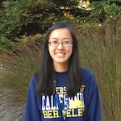
Anita Cu
- anitacu5@berkeley.edu
- Lab 124C Tu 11-12:30 PM (Soda 277)
- Disc 126B Th 12:30-2 PM (Dwinelle 79)
- Hello! I’m Anita & I’m a fourth-year CS major from the Bay Area. Besides teaching, I love listening to music, rewatching Friends + Disney movies, and drinking avocado smoothies. Looking forward to an awesome semester of 61a! (pronouns: she/her)
Annie Tang
- annietang@berkeley.edu
- Hello hello! I'm a fourth year CS major from the Bay (pronouns: she/her), and an avid lover of music. In 2016 I migrated to my current home: Kresge Engineering Library, where I can often be found napping or sneaking food in to eat (huh, what?) 👀Feel free to email me about anything, anytime! :,)
Audrey Thompson
- audreythompson@berkeley.edu
- Lab [NPE] 126C Tu 12:30-2 PM (Soda 273)
- Disc [NPE] 128B Th 12:30-2 PM (Evans 9)
- Hello! I'm Audrey, I'm a senior studying Computer Science and this is my third semester TA'ing 61A! In my free time I like playing video games, eating food, and reading. I specialize in fullstack web development, so if you want to know anything about making websites feel free to hit me up!
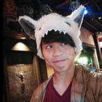
Boren Tsai
- boren.tsai@berkeley.edu
- Lab 108C Mo 3:30-5 PM (Soda 277)
- Disc 104B We 5-6:30 PM (Hearst Gym 242)
- Time flies like an arrow; fruit flies like a banana. (he/him)
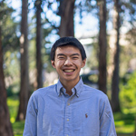
Brandon Fong
- brandyfongfong@berkeley.edu
- Lab 123C Tu 11-12:30 PM (Soda 275)
- Disc 125B Th 12:30-2 PM (Barrows 13)
- Senior / CS + DS / Torrance, CA. This semester, I'm looking work on my Frisbee forehand, bake a crème brûlée, and finally get over my High School Musical phase. If you can help out, please let me know! (or if you want to talk about computer science, then I guess that's also ok)
Brian Lee
- beomjin@berkeley.edu
- Lab 116C Mo 6:30-8 PM (Soda 277)
- Disc 116B We 6:30-8 PM (Evans 3)
- Hi everyone! I am Brian, a junior CS major. I tend to drink an unhealthy amount of Snapple and Coke Zero, so if you catch me gulping them down, either remind me to stop it or poke me if you want a lecture on why I think they are healthy. I look forward to a great semester! My pronouns are he/him.

Cameron Malloy
- cmalloy@berkeley.edu
- Lab 157C Mo 3-4:30 PM (Soda 330)
- Disc 102B We 3-4:30 PM (Soda 320)
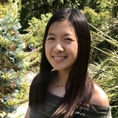
Catherine Cang
- catherinecang@berkeley.edu
- Lab 156C We 11-12:30 PM (Soda 277)
- Disc 138B Th 5-6:30 PM (Wheeler 30)
- Hi! I'm Catherine, and I'm a third year CS major for San Diego! I like cats, board games, and calling lyfts up to Soda Hall after oversleeping. I love teaching and I love CS61A, so I look forward to meeting you this semester! My pronouns are she/her.
Cesar Plascencia Zuniga
- cesar.pz@berkeley.edu
- Greetings! My name is Cesar (pronouns: he/him/his) and I have 238 characters left to describe myself. Ummmmm, my favorite anime is Spongebob and I’m a sucker for funky basslines. I also browse Reddit wayyy too much. Talk to me about memes, music, movies, and/or 61A -- that one especially! ˁ(⦿ᴥ⦿)ˀ
Chae Park
- chae@berkeley.edu
- Lab 136C Tu 3:30-5 PM (Soda 277)
- Disc 139B Th 5-6:30 PM (Dwinelle 79)
- Hi! I'm a fourth year CS major from SD. I'm thinking of running a campaign to make my cat a 61a mascot. Let me know if you would like to join :D (she/her)
Charles Sun
- charlesjsun@berkeley.edu
- Lab 140C Tu 5-6:30 PM (Soda 277)
- Disc 140B Th 5-6:30 PM (Barrows 136)
- Hi, I'm Charles! I'm a 2nd year CS major from the Bay Area. I like CS, food, video games, and physics. Come and chat about CS and tech! Very excited to teach 61A and hope you're excited to learn too!
Dalton Omens
- daltonomens@berkeley.edu
- Lab 154C We 11-12:30 PM (Soda 273)
- Disc 154B Fr 11-12:30 PM (Soda 320)
- Did you ever hear the tragedy of John DeNero The Wise? I thought not. It's not a story the 61B TAs would tell you. It's a CS legend. DeNero was a Professor of the EECS Dept, so powerful and so wise he could use the Python interpreter to influence computers to create... Programs! (I prefer he/him)
Danelle Nachum
- dnachum@berkeley.edu
- Lab 147C We 8-9:30 AM (Soda 275)
- Disc 147B Fr 8-9:30 AM (Soda 405)
Derek Wan
- derek.wan11@berkeley.edu
- Lab
106C Mo 3:30-5 PM (Soda 273)
Disc 105B We 3:30-5 PM (Soda 310)
Lab 110C Mo 5-6:30 PM (Soda 273)
Disc 109B We 5-6:30 PM (Wheeler 202)
Lab 114C Mo 6:30-8 PM (Soda 273)
Disc 114B We 6:30-8 PM (Wheeler 120) - 4th year CS major from SoCal. If you can beat my typing speed (125 WPM/545 CPM @ www.livechatinc.com/typing-speed-test or 160.7 WPM @ cats.cs61a.org) and send me a screenshot I will give you a cookie. Come to any of my three sections!
Derrick Xiong
- dxzy@berkeley.edu
- Lab 103C We 12:30-2 PM (Soda 275)
- Disc 155B Fr 12:30-2 PM (Soda 320)
- Hi~ Call me Derrick
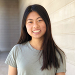
Erica Kong
- waikeikong@berkeley.edu
- Lab [NPE] 105C Mo 3:30-5 PM (Soda 271)
- Disc [NPE] 103B We 3-4:30 PM (Soda 405)
Evan Corriere
- evancorriere@berkeley.edu
- Lab [NPE] 137C Tu 5-6:30 PM (Soda 271)
- Disc [NPE] 158B We 5-6:30 PM (Wheeler 120)
- Hey everyone! I'm Evan. I've been involved with CS61a either as a student, academic intern, or staff member every semester I've been at Cal. I'm really excited for another semester! Besides 61a and computer science, I like to skateboard, play games, browse free and for sale, and cook.
Griffin Prechter
- griffinprechter@berkeley.edu
- Lab 130C Tu 2-3:30 PM (Soda 273)
- Disc 132B Th 2-3:30 PM (Evans 3)
- Hi all! I'm a senior from Los Angeles. I'm looking forward to sharing the wonders of Computer Science with you!
Imaani Choudhuri
- imaanic@berkeley.edu
- Lab 138C Tu 5-6:30 PM (Soda 273)
- Disc 157B We 5-6:30 PM (Barrows 136)
- Hi, I'm Imaani (she/her). I'm a third year CS major from SoCal and I love 61A! I'm also pretty interested in all of the sciences, not just computer science. In my free time, I enjoy drawing and gaming.
Jack Coyle
- coylejack1@berkeley.edu
- Lab 151C We 9:30-11 AM (Soda 275)
- Disc 156B Th 5-6:30 PM (Hearst Field Annex B1)
- Hey, I'm Jack Coyle, and I'm a senior from San Diego! I'm really excited to be teaching 61A this semester -- it was one of my favorite classes when I took it! You'll quickly find out that I am a huge music person. Love going to concerts and making random playlists. My pronouns are he/him.
Jacqueline Yeung
- jtyeung168@berkeley.edu
- Lab [NPE] 146C We 8-9:30 AM (Soda 273)
- Disc [NPE] 146B Fr 8-9:30 AM (Soda 320)
- Hi everyone! I'm a current junior from Union City, CA studying Computer Science. I was a previous AI and Tutor for 61A and 61A was the course that made me pursue CS at Berkeley. I love teaching and I am here for YOU. So feel free to reach out to me about anything. Pronouns are she/her.
Jade Singh
- jadesingh17@berkeley.edu
- Lab [NPE] 125C Tu 12:30-2 PM (Soda 271)
- Disc [NPE] 127B Th 12:30-2 PM (Wheeler 224)
- Hi, I'm Jade, and I'm a third year from Maryland studying computer science and music! I was in a humanities program in high school and didn't get into CS until I took this class two years ago. 61A really inspired me to pursue CS, so I hope y'all have as great of an experience as I did :) (she/her)
Jason Xu
- jasonwxu@berkeley.edu
- Lab [NPE] 109C Mo 5-6:30 PM (Soda 271)
- Disc [NPE] 108B We 5-6:30 PM (Wheeler 224)
Jason Zhou
- jasonzhou@berkeley.edu
- Lab 115C Mo 6-8:30 PM (Soda 275)
- Disc 115B We 6-8:30 PM (Dwinelle 209)
Jessica Yeh
- jessicayeh@berkeley.edu
- Lab 139C Tu 5-6:30 PM (Soda 275)
- Disc 112B We 5-6:30 PM (Etcheverry 3119)
- Hi there! I'm Jessica, and I'm a fourth year EECS major from San Mateo, CA. In my free time, I like to eat new foods, curate Spotify playlists, and try and fail to keep my succulents alive. My pronouns are she/her. Looking forward to an awesome semester!
Karthik Bharathala
- krbharathala@berkeley.edu
- Lab 134C Tu 3:30-5 PM (Soda 273)
- Disc 135B Th 3:30-5 PM (Evans 3)
- Hi! I'm Karthik and I'm a 4th year CS+DS major from Fremont, CA. This is my sixth semester TA'ing CS61A and I hope you enjoy the class as much as I do! In my free time you can find me binging The Office (again) or taking in a 49ers game.
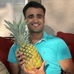
Kartik Kapur
- Kapurkartik@berkeley.edu
- Lab 121C Tu 11-12:30 PM (Soda 271)
- Disc 123B Th 11-12:30 PM (Etcheverry 3119)
- I am currently working on bridging the gap between turtles and dolphins via community porridge making classes. Unity is key to great tapioca!
Katherine Liu
- katherineliu28@berkeley.edu
- Lab 144C Tu 6:30-8 PM (Soda 277)
- Disc 141B Th 6:30-8 PM (Evans 9)
- Hello! I'm a 4th-year CS major and my pronouns are she/her. Along with good stories, I love poetry, sunshine, green tea, and cats. Let's have a great semester! :)
Kavi Gupta
- kavi@berkeley.edu
- Hi! I'm Kavi, a CS master's student interested in machine learning and programming languages. Outside of CS, I'm interested in scientific skepticism, science, and science fiction. "I refuse to be bound by an abstraction" -Most 61a quote I could get from Star Trek. [he/him]
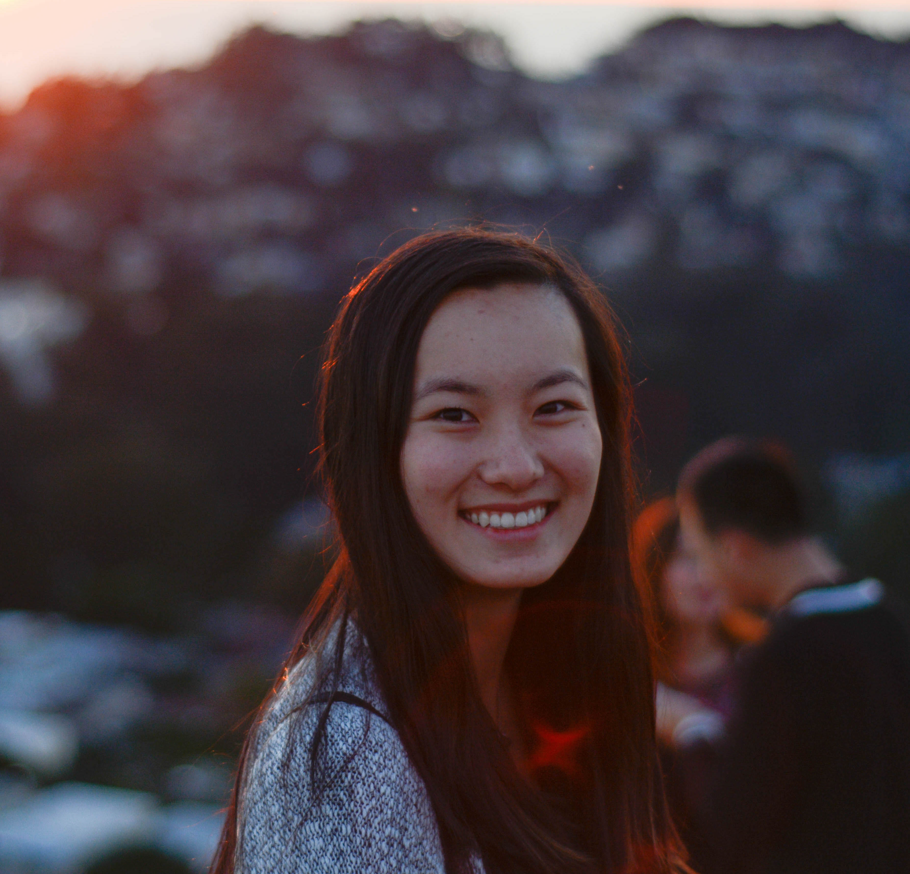
Kelly Chen
- kchen05@berkeley.edu
- Lab [NPE] 155C We 11-12:30 PM (Soda 275)
- Disc [NPE] 148B Th 5-6:30 PM (Wheeler 224)
Kevin Yu
- kevin.j.yu@berkeley.edu
- Lab 152C We 9:30-11 AM (Soda 277)
- Disc 152B Th 5-6:30 PM (Dwinelle 242)
- Hello there! I’m Kevin and I’m a third-year CS major from the Bay Area. My favorite pastimes are hanging out with my doggo and solving tricky Scheme problems. My pronouns are he/him.
Khalil Sarwari
- khalil.sarwari@berkeley.edu
- Lab 148C We 8-9:30 AM (Soda 277)
- Disc 117B Th 11-12:30 PM (Wheeler 130)

Kyle Tse
- tse.kylekobie@berkeley.edu
- Lab [NPE] 149C We 9:30-11 AM (Soda 271)
- Disc [NPE] 149B Fr 9:30-11 AM (Soda 310)
- I like to sing.
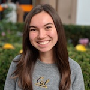
Lauren Meier
- laurenmeier@berkeley.edu
- Lab 129C Tu 2-3:30 PM (Soda 271)
- Disc 131B Th 2-3:30 PM (Dwinelle 209)
- Hi there, I'm Lauren! My pronouns are she/her. When I'm not spending time with y'all, I love spending time outdoors and listening to music. I am also a huge fan of Oreos (they often make an appearance at my sections). See you around!
Lillian Du
- lilliandu@berkeley.edu
- Lab 120C Tu 9:30-11 AM (Soda 277)
- Disc 121B Th 12:30-2 PM (Barrows 185)
- Hello! See if you can find a face that looks like mine on this page https://inst.eecs.berkeley.edu/~ee16a/fa19/#staff :) CS61a is my favorite class at Berkeley and I hope it becomes yours too. Feel free to ask me any questions! My pronouns are she/her.
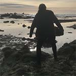
Nancy Shaw
- nshaw99@berkeley.edu
- Lab [NPE] 117C Tu 9:30-11 AM (Soda 271)
- Disc [NPE] 119B Th 9:30-11 AM (Genetics & Plant Bio 107)
- Hi! I'm a 3rd year CS major from Texas. I look forward to meeting y'all and hope we have a great semester together! :) (My pronouns are she/her.)
Patricia Ouyang
- patriciaouyang@berkeley.edu
- Lab [NPE] 102C We 12:30-2 PM (Soda 273)
- Disc [NPE] 101B Fr 12:30-2 PM (Soda 310)
- Hello, I'm Patricia. I'm a third-year EECS major from San Diego. I like drawing, music, video games, and anime. My pronouns are she/her.
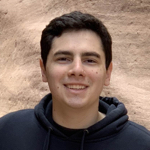
Paul Bitutsky
- pbitutsky@berkeley.edu
- Lab 158C Mo 4:30-6 PM (Soda 330)
- Disc 107B We 4:30-6 PM (Soda 405)
- Hi! My name is Paul and I'm a 5th year CS + Business (Haas) double major. This is my 5th time TAing 61A. Besides teaching, I love watching Netflix, going to the gym, and exploring SF with friends. I'm also heavily involved with Computer Science Mentors so talk to me if you have questions about CSM.
Richard Roggenkemper
- rroggenkemper22@berkeley.edu
- Lab 111C Mo 5-6:30 PM (Soda 275)
- Disc 110B We 5-6:30 PM (Hildebrand B56)
- Hi! My name is Richard. I'm a second year student from Los Gatos, California. I’m a Computer Science/Data Science major also hoping to major in Business. I love skiing, cooking, and anything related to food. I’m excited to be teaching this semester!
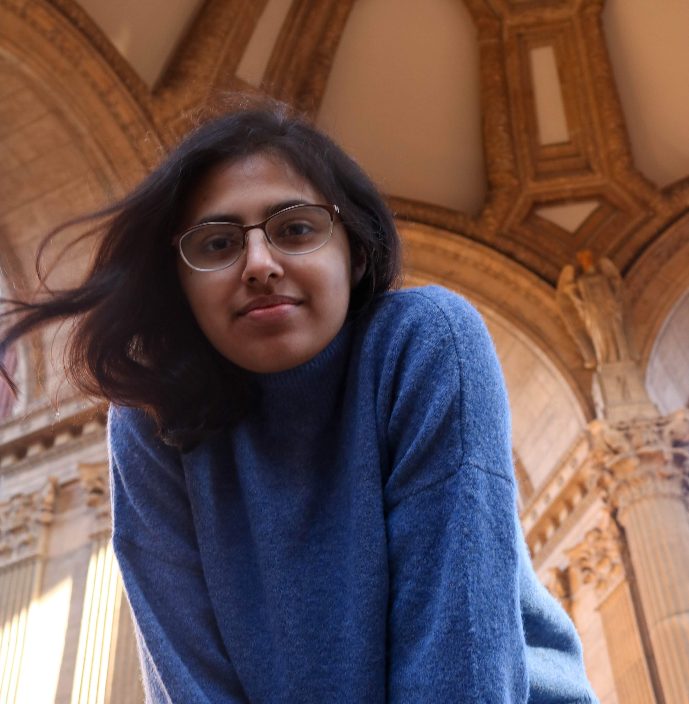
Risham Sidhu
- rishamsidhu@berkeley.edu
- Lab [NPE] 133C Tu 3:30-5 PM (Soda 271)
- Disc [NPE] 134B Th 3:30-5 PM (Wheeler 20)
- Hi, I'm junior in EECS with a linguistics minor. I'm into NLP so feel free to talk to me if that's something you're interested in! I also love reading, bingeing YouTube and Netflix, and buying boba but without the boba (so just overpriced tea). My pronouns are she/her.
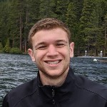
Samy Cherfaoui
- scherfaoui@berkeley.edu
- Lab 122C Tu 11-12:30 PM (Soda 273
- Disc 124B Th 11-12:30 PM (Wheeler 202)
- I'm a rising junior studying computer science. Not sure what else to put here that I won't regret later so if you would like to know more about me, come to my office hours! (he/him)

Sean O'Brien
- sean.obrien@berkeley.edu
- Lab 112C Mo 5-6:30 PM (Soda 277)
- Disc 111B We 5-6:30 PM (Hildebrand B51)
- Hi all! I'm an second-year EECS/CogSci major from San Carlos, CA, with he/him pronouns. I love running, playing piano, obsessing over Black Mirror and trying to find the best cheap food in Berkeley. Looking forward to a great semester with all of you -- reach out anytime!
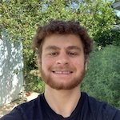
Shaviv Hoffman-Lowitz
- shaviv@berkeley.edu
- Lab 128C Tu 12:30-2 PM (Soda 277)
- Disc 130B Th 2-3:30 PM (Wheeler 200)
- Hi! I’m Shaviv (pronouns: he/him/his), a third year Computer Science major from the Bay Area. In my free time, I enjoy playing basketball, ultimate frisbee, video games, and hanging out with friends. If you want to talk to me about sports, or anything else, I’d be happy to talk to you!
Shayna Kothari
- shayna.kothari@berkeley.edu
- Lab 150C We 9:30-11 AM (Soda 273)
- Disc 151B Fr 9:30-11 AM (Soda 405)
- Hello! My name is Shayna, and I'm a third-year EECS major and Human Rights minor. Among other things, I love superheroes, science, and technology ethics; in my free time, you'll probably catch me perusing the aisles of Trader Joe's, listening to music, or sleeping. My pronouns are she/her.
Sherry Luo
- sherry.z.luo123@berkeley.edu
- Lab 135C Tu 3:30-5 PM (Soda 275)
- Disc 137B Th 5-6:30 PM (Wheeler 220)
Shreya Sahoo
- shreyasahoo@berkeley.edu
- Lab 107C Mo 3:30-5 PM (Soda 275)
- Disc 106B We 4:30-6 PM (Soda 320)
- Hello, I'm Shreya! I am a fourth year CS major from Folsom, CA. I love catching up on my reading/Netflix list, trying out new recipes, and hiking. I'm excited to meet y'all this semester!
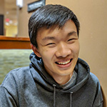
William Hsu
- whsu00@berkeley.edu
- Lab [NPE] 113C Mo 6:30-8 PM (Soda 271)
- Disc [NPE] 113B We 6:30-8 PM (Evans 70)
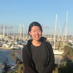
Yannan Tuo
- ytuo@berkeley.edu
- Lab [NPE] 145C We 8-9:30 AM (Soda 271)
- Disc [NPE] 145B Fr 8-9:30 AM (Soda 310)
- "when nothing goes right, go left" :^)
Yichen Sun
- yichensun@berkeley.edu
- Lab
127C Tu 12:30-2 PM (Soda 275)
Disc 129B Th 2-3:30 PM (Wheeler 224)
Lab 131C 2-3:30 PM (Soda 275)
Disc 136B Th 3:30-5 PM (Wheeler 130) - hello! i'm a senior studying CS. i'm from the Bay Area & some of my favs are cats, makeup, memes, and boba. generally when i'm not Struggling™ through school-related things you can find me in various stages of sleeping. my pronouns are she/her. im excited to be starting my 5th semester teaching 61A!